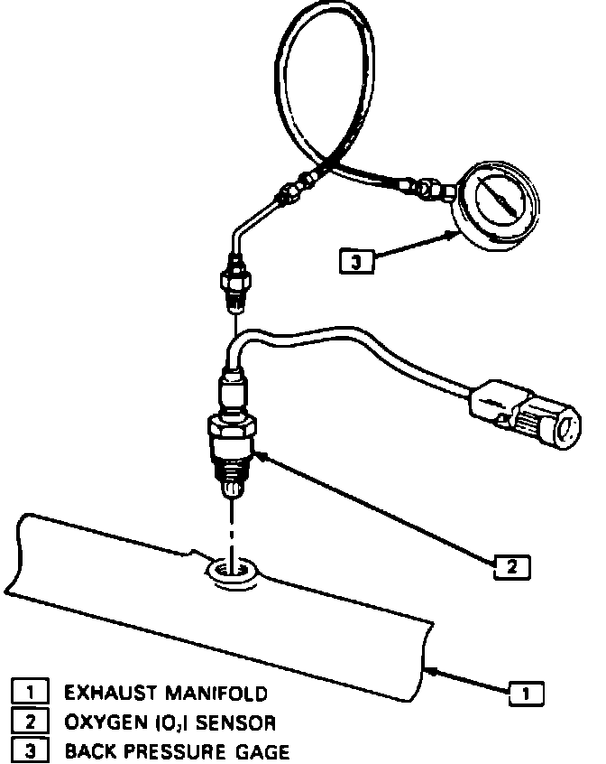

Exhaust Restriction Test
EXHAUST RESTRICTION TEST:Exhaust System Back Pressure Check (Using Oxygen Sensor Mounting Hole):

1. Install exhaust backpressure tester in place of Heated Oxygen Sensor (HO2S) or exhaust pipe.
2. With engine idling at normal operating temperature, the gauge reading should not exceed 8.6 kPa (1.25 psi).
3. Increase engine speed to 2000 rpm. Gauge reading should not exceed 20.7 kPa (3 psi).
4. If backpressure at either speed exceeds specification, a restricted exhaust system is indicated.
5. Inspect exhaust system for a collapsed pipe, heat distress or possible internal muffler failure.
6. If no obvious reasons for excessive exhaust system backpressure are found, suspect a restricted catalytic converter.
7. After completing test, coat threads of Heated Oxygen Sensor (if removed) with anti-seize compound prior to reinstallation.